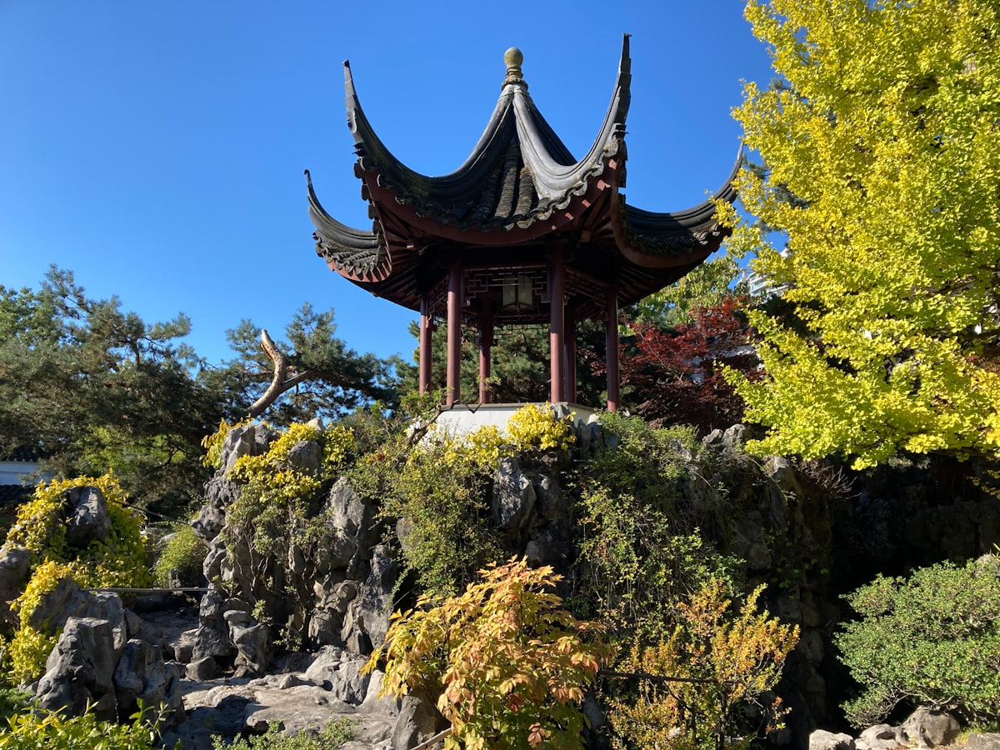
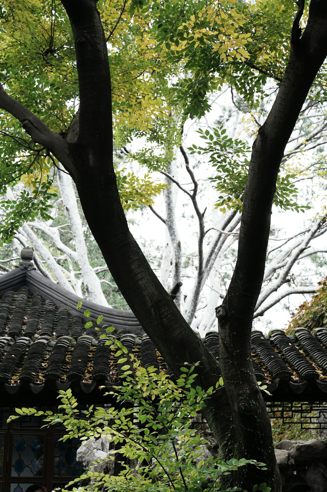

Classical Garden
Lingering Garden
留园
A masterwork of spatial composition and artistic rock arrangement
History
Created during the Ming Dynasty in 1593, the Lingering Garden underwent major renovation in the Qing Dynasty. It represents the peak of Chinese private garden art.
Design Philosophy
The garden demonstrates the principle of "small spaces containing great scenery." Through careful arrangement of architecture, rocks, water, and plants, it creates a sense of infinite depth within limited space.

Rock Compositions
The garden houses some of China's most prized rocks, including the 6.5-meter Crown Cloud Peak. These Taihu stones are valued for their wrinkled, perforated, and slender forms.

Covered Walkways
Over 700 meters of covered corridors connect different garden areas while framing views through latticed windows. Each window opening presents a living painting.

Architectural Details
Halls feature exquisite woodwork, carved doors, and calligraphic inscriptions. The interplay of interior and exterior spaces creates a rhythm of revelation and concealment.